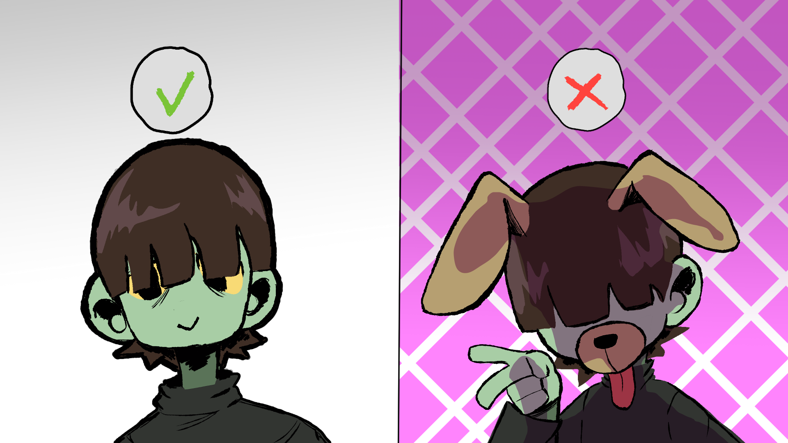
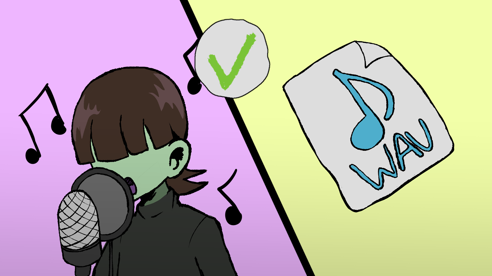
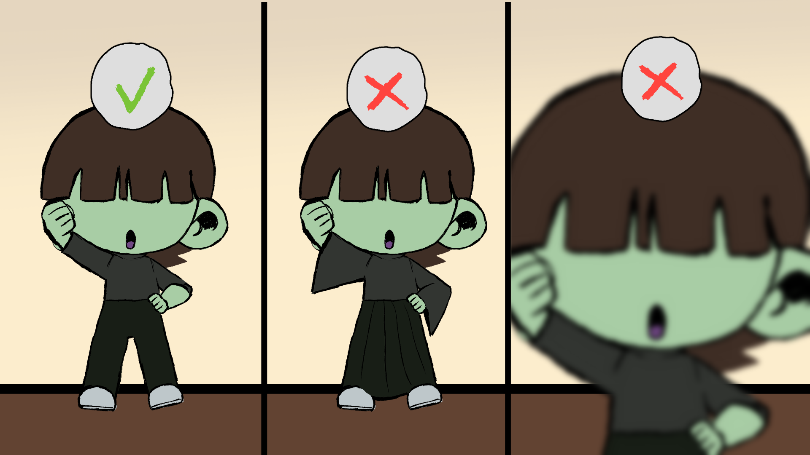

Face / appearance reference
Face Requirements
Submit a clear, well-lit image where your face is unobstructed and easy to see. Avoid filters, extreme blur, or costumes that hide your facial features.

Official member auditions
We are looking for performers who are excited to grow, collaborate, perform, and help shape Monsta Melodic as an independent alt idol group.
Start your application ↗Before you apply
Please review both sections before submitting your form.
Applicants should be able to participate reliably in rehearsals, meetings, content creation, performances, and group activities as scheduled.
We are looking for people who can communicate consistently, meet deadlines, and contribute to the long-term development of the group.
Professional experience is not required. Applicants should be willing to practice, receive feedback, improve, and perform as part of a team.
Members should be respectful, communicative, supportive of other members, and comfortable working within a collaborative creative project.
Use the references below when preparing your application materials. They show the expected framing for face photos, singing clips, and dance clips.
Face / appearance reference
Submit a clear, well-lit image where your face is unobstructed and easy to see. Avoid filters, extreme blur, or costumes that hide your facial features.

Vocal submission reference
Submit a vocal clip where your voice can be heard clearly. Use clean audio whenever possible and avoid effects that make it difficult to evaluate your natural singing.

Dance submission reference
Frame your full body from head to toe so your movement is visible throughout the clip. Avoid close crops or camera framing that cuts off your body.

Ready?
Once you've reviewed the requirements and prepared your materials, continue to the official Monsta Melodic application form.
Idol Application!Open Google Form ↗